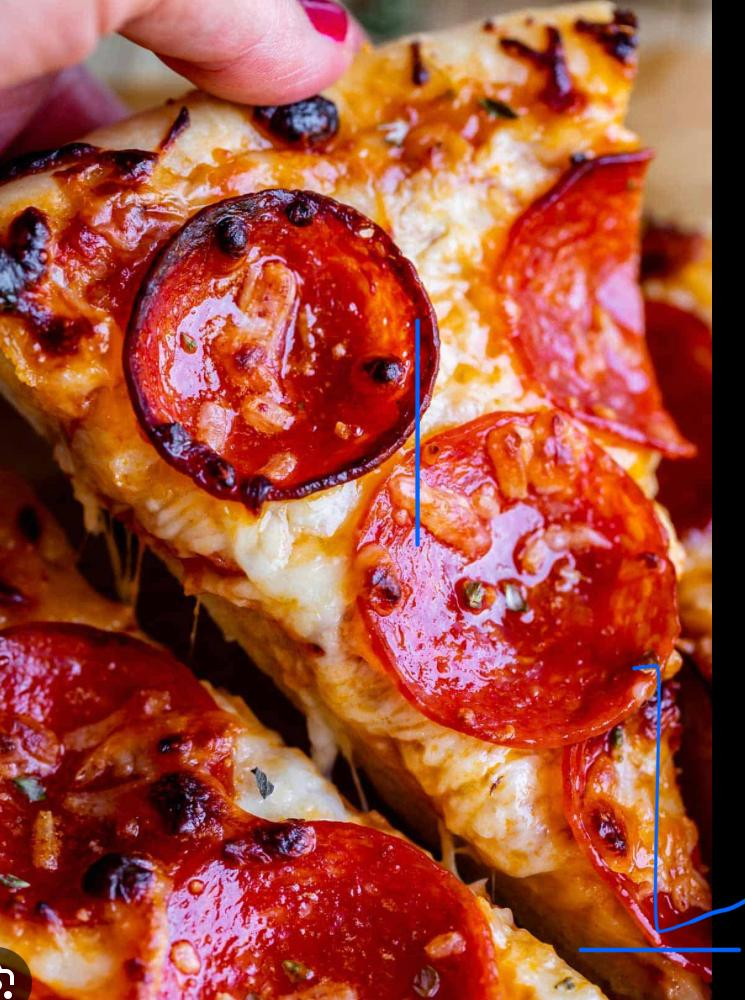
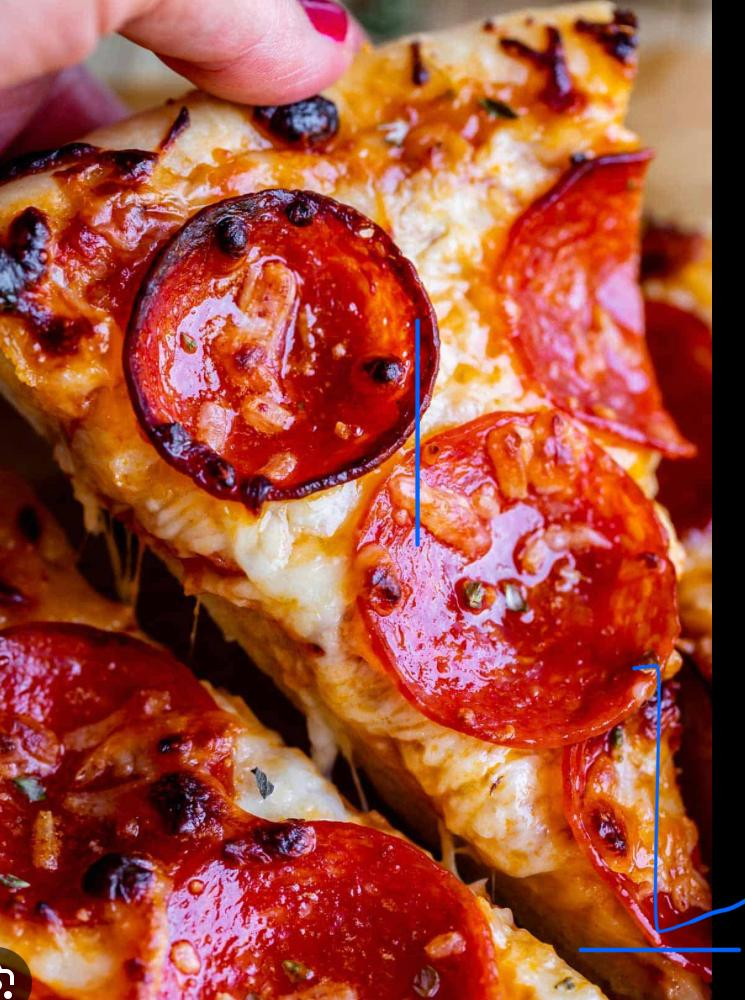
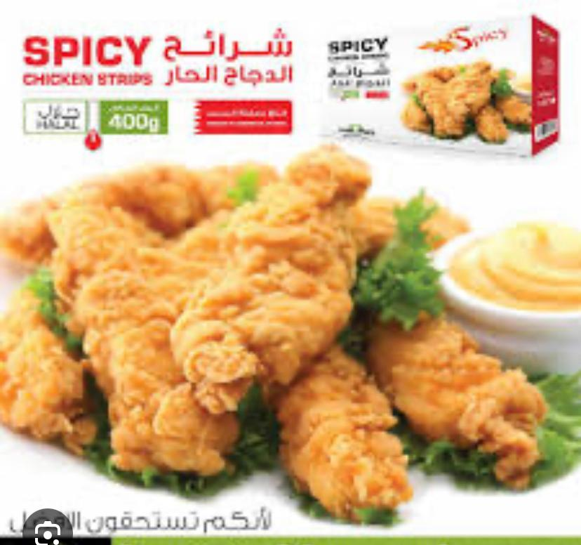
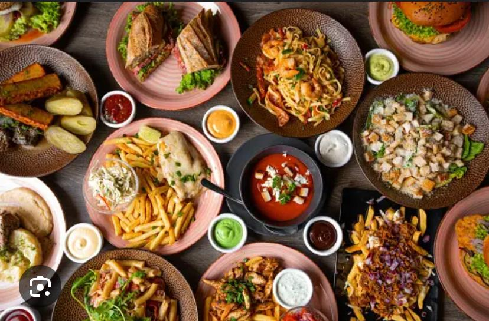
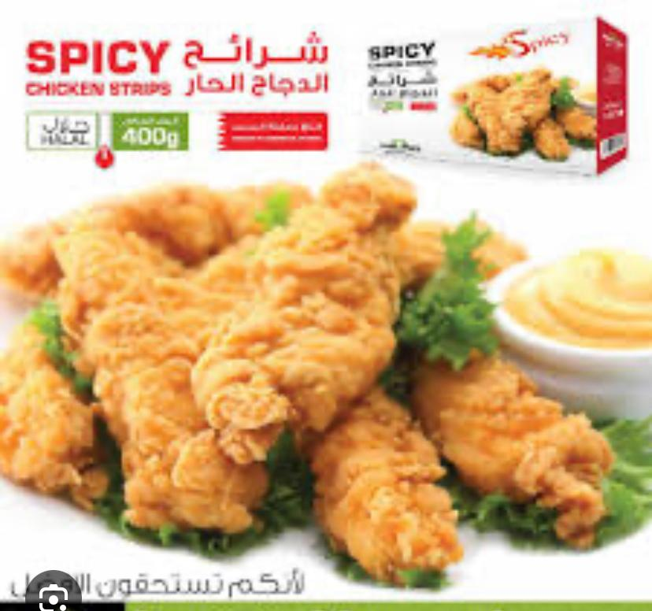
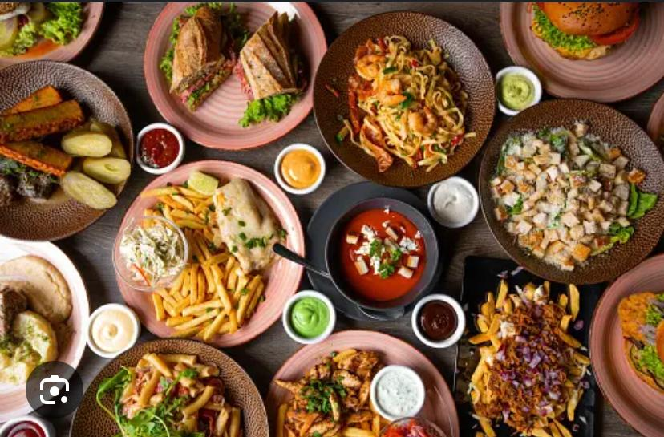

Experience the taste of authentic Nepali and western cuisine
Western Cuisine includes diverse regional styles such as French, Italian, Spanish, American, and British, focusing on fresh ingredients, meats, dairy products, and rich sauces. Notable dishes include Coq au Vin, pasta, paella, and fish and chips. Nepali Cuisine is influenced by Indian, Tibetan, and Chinese cuisines. Staples include Dal Bhat (rice and lentil soup), momos (dumplings), and thukpa (noodle soup). Nepali cuisine emphasizes spices such as cumin, coriander, turmeric, and chilies, with a variety of vegetarian options and fresh, locally sourced ingredients.
 
 


